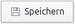

Skanlite
Dieser Artikel wurde für die folgenden Ubuntu-Versionen getestet:
Ubuntu 16.04 Xenial Xerus
Ubuntu 14.04 Trusty Tahr
Zum Verständnis dieses Artikels sind folgende Seiten hilfreich:
Bei Skanlite  handelt es sich um eine einfache und funktionelle KDE-Anwendung, um Bilder zu scannen und diese danach abzuspeichern. Die eingelesenen Bilder können entweder manuell oder auch automatisiert gespeichert werden. Es setzt auf die Bibliothek libksane auf und nutzt darüber SANE zur Steuerung des Scanners.
handelt es sich um eine einfache und funktionelle KDE-Anwendung, um Bilder zu scannen und diese danach abzuspeichern. Die eingelesenen Bilder können entweder manuell oder auch automatisiert gespeichert werden. Es setzt auf die Bibliothek libksane auf und nutzt darüber SANE zur Steuerung des Scanners.
Installation¶
Skanlite gehört nicht zur Standardinstallation von Kubuntu, daher muss das folgende Paket nachinstalliert[1] werden:
skanlite
 mit apturl
mit apturl
Paketliste zum Kopieren:
sudo apt-get install skanlite
sudo aptitude install skanlite
Bedienung¶
Nach der Installation befindet sich bei Ubuntu-Varianten mit einem Anwendungsmenü ein Programmstarter unter "Grafik -> Skanlite"[2].
| Skanlite |
| scannerspezifische Einstellungen |
| Einstellungen |
| Speichern |
| Speichern unter |
Auswahl des Scanners¶
Nachdem der Scanner eingeschaltet und das Programm gestartet wurde, erscheint ein Dialog mit allen vom System erkannten Geräten. Dort muss nun der gewünschte Scanner ausgewählt werden. Ist keiner angeschlossen bzw. wurde keiner erkannt, so startet die Anwendung nicht. Problemlösungen und weitere Hilfen findet man dann im Artikel Scanner.
Hat man mehrere Scanner aktiv und möchte einen als Standard festlegen, kann man dies im Terminal[3] mit folgendem Befehl erfolgen:
skanlite -d GERÄTENAME
Hinweis:
Bei manchen Scannern kann das Neuladen der Geräteliste fehlschlagen. Ein Beenden und erneutes Starten von Skanlite schafft Abhilfe.
Benutzeroberfläche¶
Die Oberfläche von Skanlite ist zweigeteilt. Auf der linken Seite befinden sich alle verfügbaren Optionen, um den Scanvorgang bzw. das Resultat dessen einzustellen. Dieser ist nochmals unterteilt in "Basis-Einstellungen" und "Scanner-spezifische Einstellungen". In erstgenannten kann die Scanquelle, der Scanmodus und die Auflösung eingestellt, sowie die Option zum invertieren der Farben gewählt werden. Im anderen Reiter sind Regler für gerätespezifische Optionen zu finden, wie das Scannen per Knopfdruck, Helligkeit, Kontrast und Gammawert.
Auf der rechten Seite befindet sich das Aufgabefenster. Dort wird der Vorschauscan bzw. das Endresultat dargestellt. Am unteren Rand der Ausgabe befindet sich der Werkzeugkasten mit oftmals benötigen Werkzeugen
Von links nach rechts: "vergrößern", "verkleinern", "in den ausgewählten Bereich zoomen", "auf Ansichtsgröße zoomen", "Auswahl löschen", "Vorschauscan" und "Scannen".
Vorschauscan¶
Als Vorschauscan bezeichnet man einen schnellen Scanvorgang mit reduzierter Qualität, um gegebenenfalls die Ausrichtung anzupassen oder Fusseln etc. zu entfernen. Nach dem Klick auf die Schaltfläche "Vorschau" wird das Vorschaubild eingelesen. Nachdem dieser Vorgang beendet ist, können Korrekturen mittels der Optionen am linken Bildrand vorgenommen werden. Des Weiteren kann das Bild über die anderen Schaltflächen vergrößert/verkleinert werden, sowie die automatische Auswahl von Bereichen aufgehoben werden.
Scannen¶
Nach dem Klick auf wird der eigentliche Scanvorgang ausgelöst. Dieser benötigt je nach gewählten Einstellungen einige Zeit. Ist der Vorgang abgeschlossen, so erscheint ein Dialog, der das gescannte Bild nochmals anzeigt. Durch einen Klick auf  erscheint ein Dialog, der den Benutzer auffordert, einen Namen und ein Format für das Bild festzulegen.
Bild-Formate¶
Skanlite unterstützt mehr als 15 verschiedene Formate zum Speichern, darunter PNG, JPEG, TIFF, JP2, WEBP, XBM, XPM, TGA, EPS.
Hinweis:
Je nach der verwendeten Version von Ubuntu können sich die Dateiformate unterscheiden.
Knopfstatus¶
Dies ist eigentlich ein SANE-Thema, daher wird es hier nur kurz angerissen. Der Knopfstatus spiegelt den aktuellen Status der am Gerät befindlichen Knöpfe wider. Im Normalfall ist der erste Knopf SCAN oder COLOR und der zweite GRAY oder END. Siehe auch scanbuttond hier im Wiki.
Problembehebung¶
Unterschiede zwischen 16.04 und 14.04¶
| Ubuntu 16.04 | Ubuntu 14.04 | |
| Basis-Einstellungen | ||
| Scanner-spezifische Einstellungen | ||
| Skanlite-Einstellungen |
Scannen über Netzwerk¶
Beim Scannen über das Netzwerk kann es zum wenig aussagekräftigen Fehler wie
"ungültiges Argument"
kommen. Dies bedeutet für gewöhnlich, dass ein anderer Nutzer gerade einen Scanvorgang durchführt. Zum weiteren Einrichten des Netzwerkscannens findet man Informationen im Artikel SANE-Scanserver im Netzwerk.
- Erstellt mit Inyoka
-
 2004 – 2017 ubuntuusers.de • Einige Rechte vorbehalten
2004 – 2017 ubuntuusers.de • Einige Rechte vorbehalten
Lizenz • Kontakt • Datenschutz • Impressum • Serverstatus -
Serverhousing gespendet von